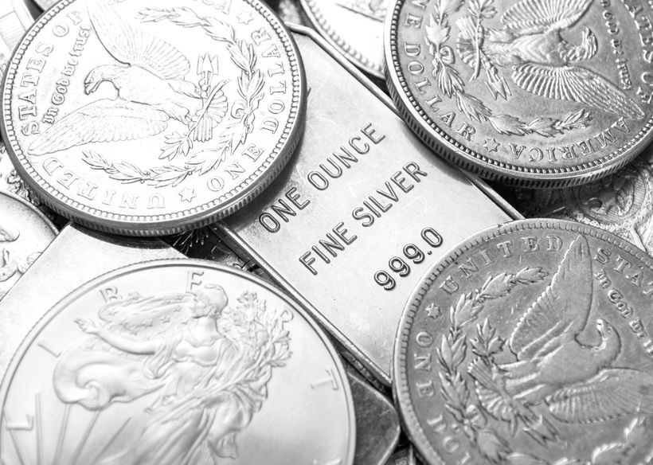
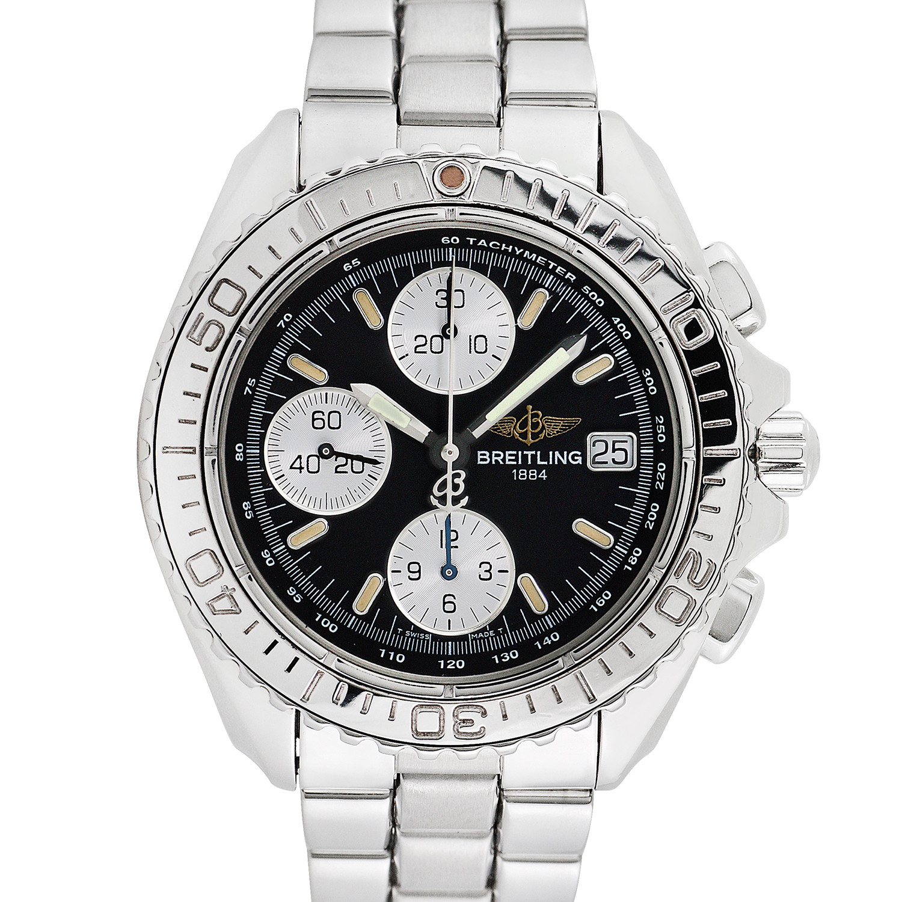

Collections and Hobbies
I have heard many times that I get obsessed about things when I become interested in something. I do go deep down the rabbit hole when I start to enjoy a new hobby or new collection, one of my first collections I ever started was silver and gold bullion, ever since my first job where I was making checks of about $180 a week, I would put money aside and use it to buy silver coins.
Some over hobbies that I have grown fond of over the years include:

- Watch collecting
- Silver and Gold
- Fish and Reptiles
- Hats
- Baseball cards
...But between all of the different hobbies and collections I don't think any have become more important to me as watches and silver bullion...
These are some images that include American Silver Eagle's, some of the most collectable silver bullion available which is 99.9% pure Ag. The majority of my collection is comprised of American Silver Eagles, however I also do have some vintage coins, such as 1964 Kennedy half dollars, which are 70% silver, and some silver and gold bars (not kilos, I wish) that are also 99.9% pure Ag and Au.
I also have pictured my dream watch at the moment. This is a Breitling Chronoshark, this watch is no longer made and costs about $2,500 on the second hand market. I like this watch because it is a great size, it is a chronometer, and the styling is exceptional. At the moment the watch is just a little outside my price range, but I hope to change that soon and add one of these to my collection